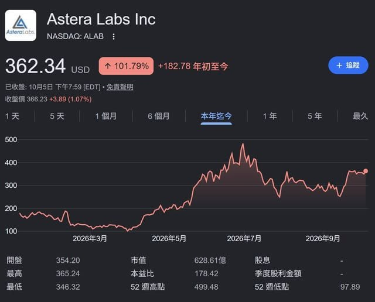

過去 26 小時共 3 則。#6465、#6466（10/6 上午的 Astera Labs 法說筆記與股價截圖）已在昨天的信講過，這次附原文、簡短回顧；今天新的只有 #6467，是一個晶圓廠題材的網頁小遊戲連結，沒有投資內容。
alab@2026citi conference
對 Asteralabs 而言，最大的槓桿事件是 amd helios 後續世代與 AWS 原生 ual 交換器落地。公司的結論是卡好交換器，不管裡面銅還光，都可以由自己去分配
- 算力需求遠超供給，客戶只能從既有硬體榨出更多產出，呼應 Scorpio X 同顆 GPU 產出更多 tokens/sec 的訴求
- Hopper 世代只掛 Aries retimer (<$100 USD)，到現在 Aries+Taurus+LEO CXL+Scorpio 合計接近 $1000 USD。下一步目標是加上光學後達數千美元/XPU
- Q3 Scorpio 將成為公司營收最大的產品線，X 系列反超 P 系列，公司稱 Scorpio P 是目前 pcie gen 6 出貨量最大的交換器
- CEO 表示不幫 AMD 發言，轉述 AMD 公開說法：MI450 系列採用 UALink over Ethernet，原因是 UALink 交換器尚未可用
- 光學布局分三階段，2027 p1 透過收購 aixscale 取得的玻璃耦合器技術去拿 cpu scale out。2028 p2 主打 200G NPO。第三階段透過自製完整光引擎來獲取最大收益
- 跨櫃 scale-up 方向上，櫃內留銅、跨櫃走光，lane 單價隨 radix 上升
- cluster 從 72 顆擴大到 144/288/576 顆 GPU 時，物理限制使銅不可行，轉入光學（先 NPO）
- 卡好交換器平台就握有系統其餘部分的影響力，銅或光的訊號調理生意都是自己的，分配問題而已

#6466 是 Google 財經截圖：Astera Labs（ALAB）10/5 收盤 362.34 美元，年初至今 +101.79%（+182.78），市值約 628.6 億美元、本益比 178.42，52 週區間 97.89–499.48，走勢在 7 月見高後回落、9 月下旬再走升。
講解（回顧）：Astera Labs 賣的是 AI 伺服器裡「訊號與連接」晶片：Aries 是 retimer（把高速訊號重新整形以拉長傳輸距離），Scorpio 是 PCIe／scale-up 交換器，Taurus 是乙太網路線纜模組，Leo 是 CXL 記憶體控制器。核心邏輯是「每顆加速器（XPU）上的含量美元」從 retimer 時代不到 100 美元，擴大到整套產品近 1,000 美元，若再加上光學可望到數千美元。誰卡住交換器這個系統中樞，銅線或光纖兩種連接的訊號調理生意都能自己分配，所以從銅轉光對它不是威脅。
查證：這是 2026/9/9 Citi Global TMT 大會的內容。TIKR 整理的說法與貼文大致相符，但有一處細節不同：TIKR 引述公司的說法是「整個產品組合每顆加速器接近 1,000 美元，光 Scorpio X 一項就可望達 1,000 美元以上」，比貼文的「合計接近 1,000」更積極。另外 TIKR 提到 Scorpio X 在 Q3 進入量產，洽談客戶從 10 家增加到十幾家（high teens），預期年底前陸續轉成 design win、2027 年貢獻營收；光學方面，首筆元件級光學營收預計在 2027 年（技術來自 2026 年 1 月收購的 aiXscale Photonics）。「MI450 走 UALink over Ethernet」是 CEO 轉述 AMD 的說法，TIKR 整理裡沒有細節，請視為二手說法。估值方面，本益比 178 倍、股價一年內最高與最低差約 5 倍，波動很大，前景樂觀的程度很多已反映在股價上。
講解：貼文只有連結、沒有評論。網站實際內容是免費的瀏覽器 3D 模擬遊戲「晶圓廠打工人的一天」：玩家扮演製程工程師，從半夜接到緊急電話開始，跟設備工程師、製程整合、製造部、主管四種角色互動，處理機台異常；行話點一下就有白話解釋，另有圖鑑、時間線、支線任務與名詞解釋，作者透過 Buy Me a Coffee 收贊助。網站明說機台、批號、數字、流程與人物都是虛構設定，所以適合當成了解晶圓廠日常與術語的輕鬆入門，不能當成產業數據來源。搜尋引擎查不到這個網站的其他報導，經營者身分不明，以上是直接讀取網站首頁的結果。